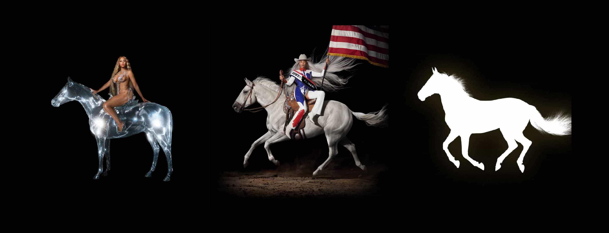
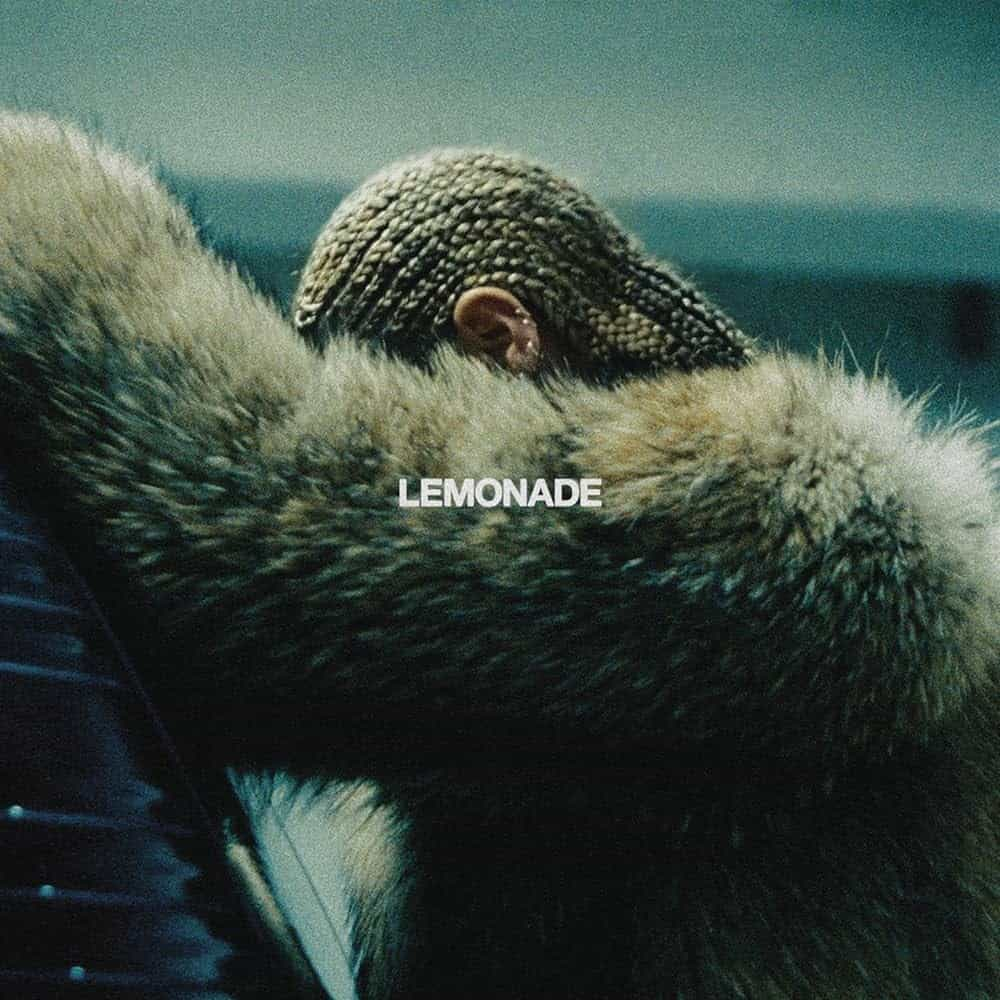
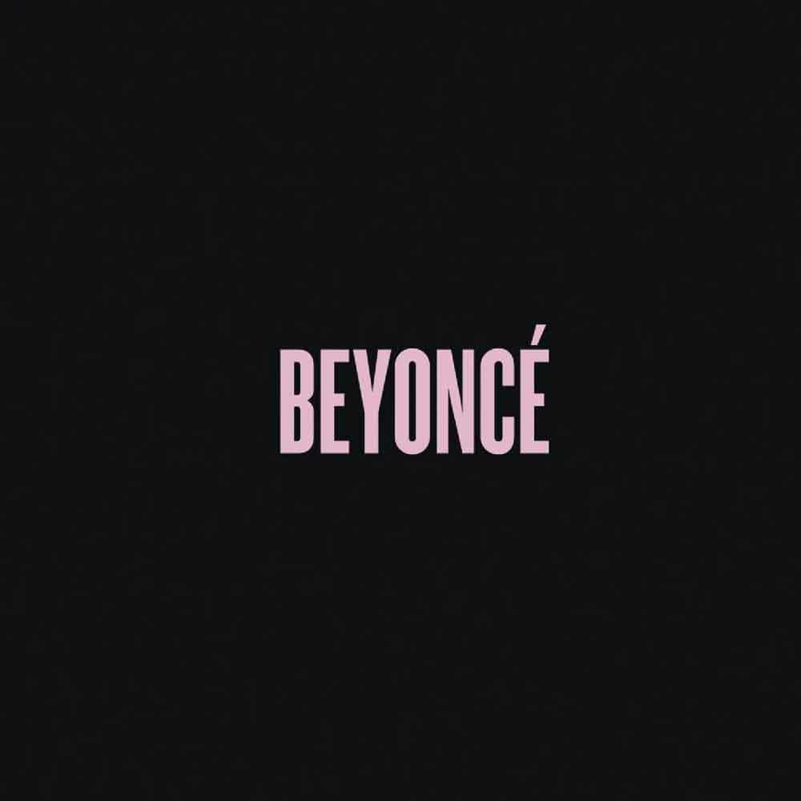
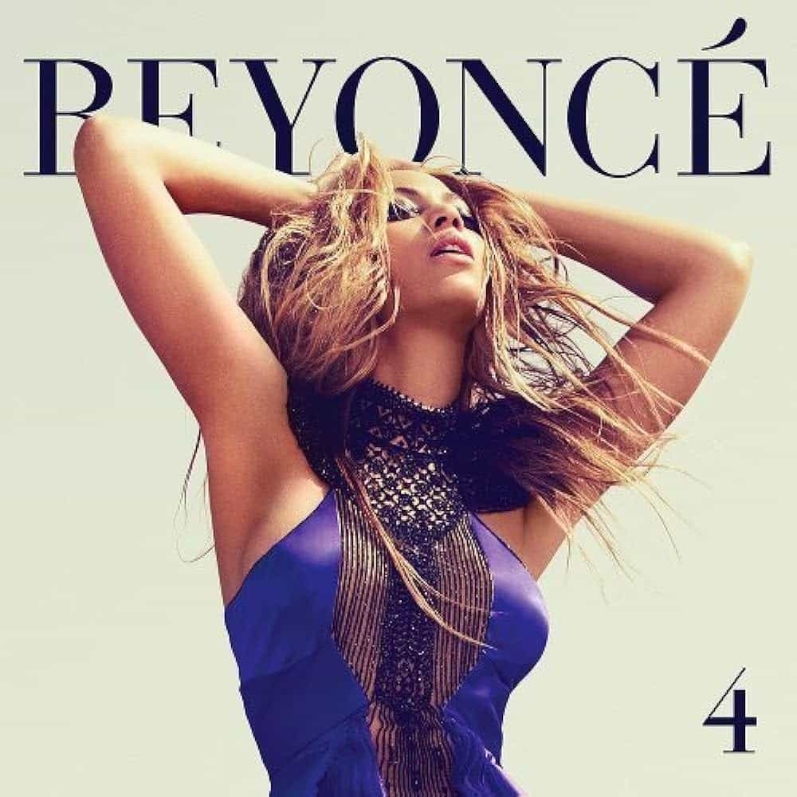
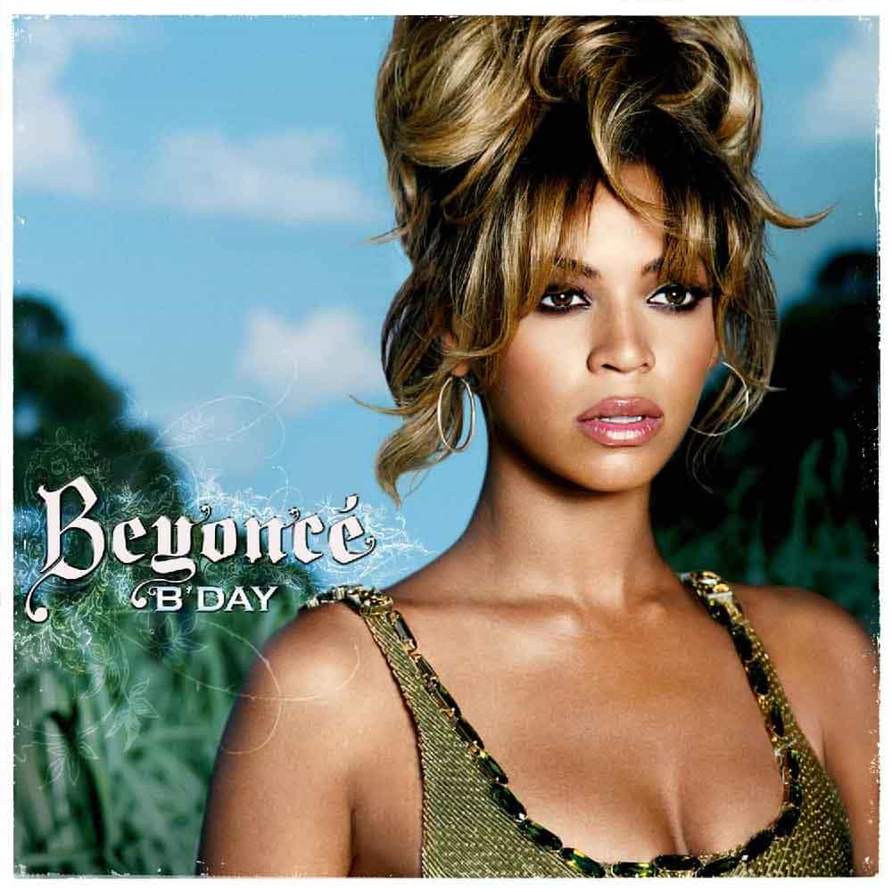
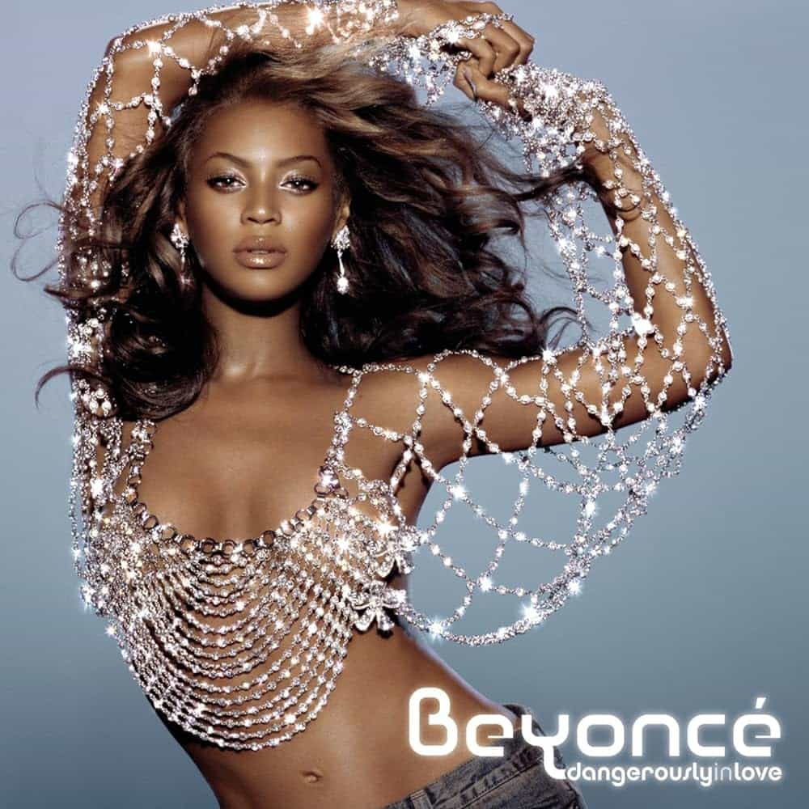

Discography
The Three Act Saga
Previous Studio Albums:

Lemonade
2016
Lemonade is the sixth studio album by American singer-songwriter Beyoncé. It was released on April 23, 2016, by Parkwood Entertainment and Columbia Records, accompanied by a 65-minute film of the same title. It follows her self-titled fifth studio album (2013), and is a concept album with a song cycle that relates Beyoncé's emotional journey after her husband's infidelity in a generational and racial context. Primarily an R&B and art pop album, Lemonade encompasses a variety of genres, including reggae, blues, rock, hip hop, soul, funk, Americana, country, gospel, electronic, and trap. It features guest vocals from James Blake, Kendrick Lamar, the Weeknd, and Jack White, and contains samples and interpolations of a number of hip hop and rock songs.

Beyoncé
2013
Beyoncé is the self-titled fifth studio album by American singer and songwriter Beyoncé. It was released on December 13, 2013, through Parkwood Entertainment and Columbia Records. Developed as a visual album, every song is accompanied by a non-linear short film that illustrates the musical concepts. Beyoncé's desire to assert her full artistic freedom served as inspiration for the album's dark, personal subject matter, which incorporated feminist themes of sex, monogamy, beauty standards and relationship problems.

4
2011
Following a career hiatus which reignited her creativity, Beyoncé was inspired to create a record with a basis in traditional rhythm and blues that stood apart from contemporary pop. Her collaborations with songwriters and record producers The-Dream, Tricky Stewart and Shea Taylor produced a mellower tone, developing diverse vocal styles and influences from funk, hip hop, and soul music. Severing professional ties with father and manager Mathew Knowles, Beyoncé eschewed the music of her previous releases in favor of an intimate, personal album. Lyrical themes of 4 emphasize monogamy, female empowerment and self-reflection, a result of Beyoncé considering a maturer message to contend artistic credibility.
I Am... Sasha Fierce
2008
In its original release, I Am... Sasha Fierce was formatted as a double album, intending to market Beyoncé's dichotomous artistic persona. The first disc I Am... contains slow and midtempo pop and R&B ballads, while the second, Sasha Fierce–titled after Beyoncé's on-stage alter ego–focuses on more uptempo beats that blend electropop and Europop elements. In composing the songs' lyrics, Beyoncé worked with writers, with each session accompanied by live orchestration. Musically, I Am... drew inspiration from folk and alternative rock, while blending acoustic guitar elements into contemporary ballads, and its tracks were written and produced by Beyoncé, during collaborative efforts with Babyface, Tricky Stewart, The-Dream and Ryan Tedder. Meanwhile, Sasha Fierce boasted production from Darkchild and Sean Garrett.

B'Day
2006
B'Day was influenced by a variety of American genres, and, like Dangerously in Love (2003), incorporated urban contemporary elements such as contemporary R&B and hip hop. Some songs showcase 1970s and 1980s styles, achieved through record sampling. "Suga Mama", which employs blues-guitar samples from Jake Wade and the Soul Searchers' "Searching for Soul", contains a 1970s funk and 1980s go-go-influenced melody. "Upgrade U" uses a sample from Betty Wright's 1968 song "Girls Can't Do What the Guys Do". "Resentment" used Curtis Mayfield's "Think" from the 1972 Super Fly soundtrack. "Déjà Vu" has 1970s influence, "Green Light" has a classic groove, and "Get Me Bodied" features twang, a musical style that originated from Texas.

Dangerously In Love
2003
Lyrically, love was the theme Beyoncé had incorporated for Dangerously in Love the most. Surrounding the release of the album, there were persistent rumors of her relationship with Jay-Z, which would later be proven true. Though "most the material is vague enough to be about any relationship", the album consists multiple tracks suggesting affirmation of their relationship. On "Signs", Beyoncé sings about being in love with a Sagittarius, Jay-Z's zodiac sign. With a theme based upon different stages of a romantic relationship, the album contains tracks speaking of romance and honesty.